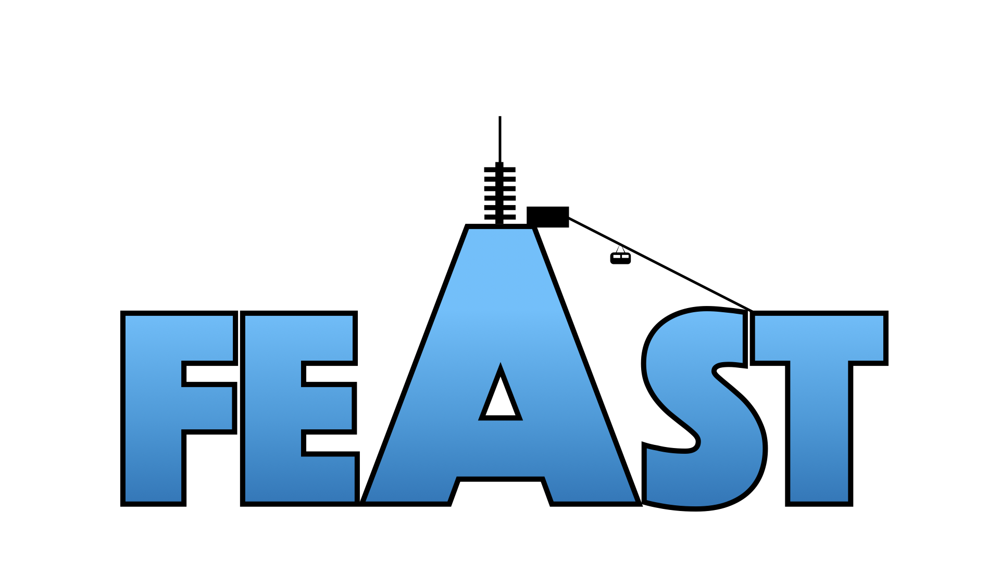

City Walking Tour (TBA)
Pre-conference meet-up (TBA)
9:00 – 9:30
Registration & Coffee
Keynote 1
Kate Rowley: What factors are important for skilled reading in deaf individuals?
On-stage
Yuko Asada: Shallow resultatives in sign language
Mini-presentations
Laura Volpato: A preliminary description of haptices in Italian social-haptic communication: a phonological perspective
Door Spruijt, Pamela Perniss & Petra Schumacher: The contribution of individual parameters to perceived iconicity and transparency in gesture-sign pairs
Philomène Perin, Santiago Herrera, Frédéric Isel & Caroline Bogliotti: FLexSign: a lexical database in French Sign Language (LSF)
Elena Fornasiero, Charlotte Hauser & Chiara Branchini: The comprehension of SRCs and ORCs in LIS: an eye-tracking study
Julia Krebs, Ronnie B. Wilbur, Evie Malaia, Isabella Fessl, Hans-Peter Wiesinger, Hermann Schwameder & Dietmar Roehm: Event structure reflected in muscle activation differences in Austrian Sign Language (ÖGS) verbs: First evidence from surface electromyography
Dietmar Roehm, Julia Krebs & Evie Malaia: Visual boundaries in sign motion: processing with and without mouthing cues
Chiara Luna Rivolta, Brendan Costello, Mikel Lizarazu & Manuel Carreiras: Language-brain entrainment: a crossmodal comparison of spoken and signed languages
Shengyun Gu: Processing weak drop by signers and non-signers of Shanghai Sign Language
Jennifer Sander, Amy Lieberman & Caroline Rowland: Exploring Joint Attention in American Sign Language: The Influence of Sign Familiarity
Anne Wienholz & Annika Herrmann: Investigating mental rotation and screen arrangement using eye tracking
Brendan Costello, Anique Schüller & Marcel Giezen: Lexical indices in sign language: familiarity and iconicity do not go hand in hand
Keynote 2
Jeremy Kuhn
Jessica Lettieri, Mirko Santoro & Carlo Geraci: On Elicited Data in Sign Language Syntax
Kathryn Davidson & Hao Lin: Polar questions via contraries in Chinese Sign Language
Marianthi Koraka, Thomas Finkbeiner, Markus Steinbach & Nina-Kristin Meister: The imperative speech act of command in German Sign Language (DGS)
Ronnie Wilbur & Sandra Wood: Experiencer object (EO) constructions in ASL: Another myth bites the dust!
Andrew Nevins, Diane Stoianov & Jacob Rando: Observing the Mapping of Theta-Roles to the Hands in Libras
Basel Rayan, Svetlana Dachkovsky & Rose Stamp: “Quantifying” in a Young Sign Language
Guilherme Lourenço & Lorena Mariano Borges de Figueiredo: Inherently reciprocal verbs in Brazilian Sign Language
Gautam Ottur: Form and function in serial verb constructions – insights from German Sign Language
Elena Benedicto: Agents. What Motion Predicates in ASL reveal about the structural properties of Agent-adding devices
Sarah Schwarzenberg & Annika Herrmann: The head for thinking, the eyes for seeing? Investigating the relationship between place of articulation (PoA) and two semantic domains in German Sign Language (DGS)
Campbell McDermid, Anita Harding & Carrie Humphrey: Interpretation and the Explicitation Process
Laurence Gagnon & Anne-Marie Parisot: Analyzing the relationship between phonological and semantic features in a corpus of astronomical neologisms in LSQ
Cindy van Boven: An experimental approach to sign language reduplication: From function to form
Raquel Veiga Busto: The meaning of reduplication with movement in LSC
Dinner
TBA
Martin Dale-Hench & Uiko Yano: Intuitions of native Japanese Sign Language signers on mouthing words with multiple pronunciations
Lyke Esselink & Floris Roelofsen: Measuring facial non-manual markers with a depth sensing camera: A case-study on polar questions in NGT
Desirée Kirst: Grammatical and affective layering in ASL: A preliminary study
Marloes Oomen & Floris Roelofsen: Biased polar question forms in NGT: The function of headshake
Nicky Macias: Mouthing Constructions as Social Indexes in ASL Pronouns
Adam Schembri: Understanding directionality in British Sign Language verbs: Pointing away from the agreement debate
Clara Lombart: Manual and non-manual cues used for the prosodic encoding of contrastive focus in LSFB (French Belgian Sign Language)
David Blunier & Evgeniia Khristoforova: Indexicals under role shift in Sign Language of the Netherlands: experimental insights
Marloes Oomen, Mirko Santoro and Carlo Geraci: Neg-raising in three sign languages